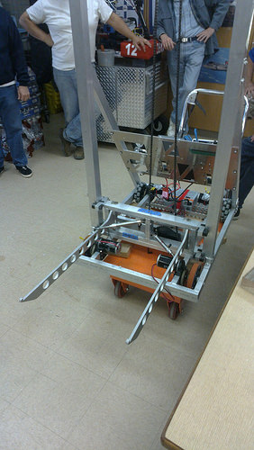
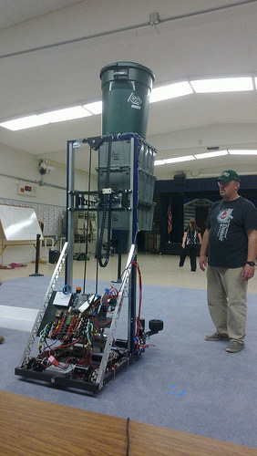

In this lab, we are going to design and implement a simple state machine.
The robot for which we are designing this state machine has an elevator which is controlled by a pulley connected to a DC brushed motor. A digital encoder is used in a feedback controller to control the height of the elevator carriage. On the carriage, there are two tines which can be moved in and out with a solenoid. This elevator assembly is used for lifting and transporting rectangular storage totes.
|  |  |
Your goal is to implement a state machine that automates the tote stacking procedure, which is initiated by the robot's user pressing a button. They should be able to repeatedly press the button to stack totes on the ground denoted by a height of zero inches.
Since the purpose of this exercise is practice with state machines, the feedback controller and robot subsystem software is provided for you. Copy the following files into a new project.
See the C++ header files (.hpp extension) for a list of available functions. RobotMock and Timer are classes. They are used in C++ for object-oriented programming and defining one's own data types in addition to the built-in ones. They contain a list of variables and member functions which are associated with an object of that type. If there existed an instance of Timer called and its Start() member function were called, that could be done with:
Timer autonTimer; autonTimer.Start();
The template in Main.cpp includes an enum class. Read about their syntax and usage here. Examples are provided here. The underlying type of the enumeration need not be specified and defaults to int.
Since the claw uses a solenoid, the current hardware location cannot be known at all times. When the claw actuates in or out, a timer should be used in the state machine to wait for the claw to finish moving.
Feedback controllers like the one controlling the elevator height are considered "finished" once they reach their setpoint, so the implementer should poll for the carriage reaching the appropriate height rather than using a timer.
TODO: for now, use the state machine diagram we discussed in lecture.
Once you are satisfied with your state machine diagram, translate it into C++ and test it. Main.cpp provides a template for you to do so. You shouldn't need to modify the RobotMock and Timer classes. We recommend adding print statements upon entering and exiting your states so the state machine's progress is externally visible.
Use the folder name state-machine for this project. Once you are confident your state machine works, let your instructor know and they will review your work.